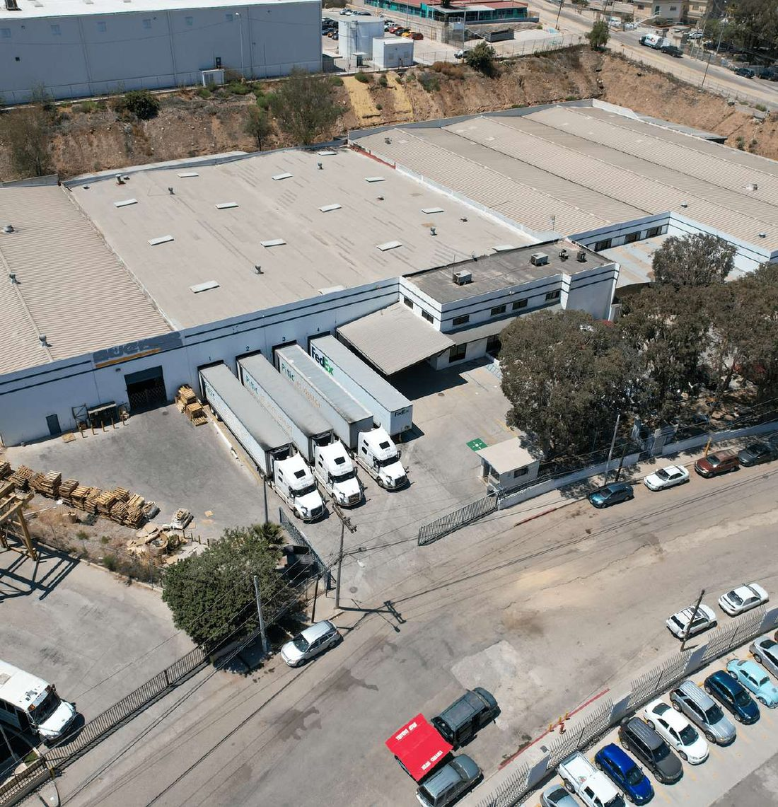

Dos garitas comerciales
Otay Mesa y San Ysidro operan en el mismo corredor. Tener alternativa importa el día que una de las dos se congestiona.
Nearshoring no es una tendencia de presentación: es la decisión de acortar la distancia entre donde se fabrica y donde se vende. Tijuana es el punto donde esa distancia se vuelve mínima sin salir de Norteamérica.
La comparación relevante no es costo por hora de mano de obra. Es cuántos días de inventario tienes atrapado en tránsito, cuántos puntos de falla tiene la ruta y cuánto tarda un cambio de diseño en llegar al producto terminado.

Comparativa de carriles de suministro Comparativa esquemática entre el carril transpacífico y el carril fronterizo terrestre.
| Dimensión | Carril transpacífico | Carril fronterizo |
|---|---|---|
| Unidad de tránsito | Semanas | Horas |
| Modo dominante | Marítimo + ferroviario + camión | Camión |
| Transbordos | 4–6 | 1–2 |
| Tamaño mínimo eficiente | Contenedor completo | Tarima |
| Reacción a cambio de demanda | Siguiente ciclo de embarque | Misma semana |
| Huso horario del proveedor | Desfasado | El mismo |
Comparativa cualitativa entre modos de transporte, no una cotización. Los números exactos dependen de tu producto, origen y volumen.
Otay Mesa y San Ysidro operan en el mismo corredor. Tener alternativa importa el día que una de las dos se congestiona.
Décadas de manufactura han dejado proveedores locales, talleres, mantenimiento y personal técnico entrenado. No arrancas en un desierto industrial.
Ingeniería, laboratorios, clientes y aeropuerto internacional a menos de una hora del piso de producción.
IMMEX, T-MEC y los programas de operador confiable llevan años funcionando. La incertidumbre regulatoria es baja comparada con abrir un mercado nuevo.

La frontera desde el aire Fotografía aérea del cruce comercial y el parque industrial contiguo.
No hace falta decidir el escenario final antes de empezar. La mayoría de las operaciones que hoy producen aquí entraron por el escalón más bajo.
Sigues produciendo donde produces y sólo usas el corredor para mover mercancía. Compromiso mínimo, aprendizaje real sobre tiempos y documentación.
Guardas producto terminado en Tijuana para atender Estados Unidos en horas. Reduces inventario en tránsito sin tocar tu manufactura.
Mueves una línea completa bajo nuestra entidad y nuestro permiso. Si funciona, escalas; si no, sales sin haber constituido nada.
Preferimos decirlo antes de firmar. Acercar la manufactura resuelve distancia y tiempo de reacción; no resuelve un producto sin demanda, un proceso inestable ni una lista de materiales cara.